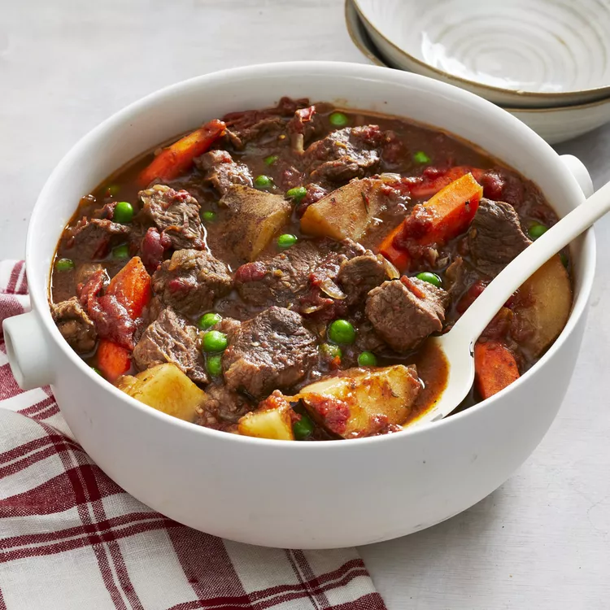

Special Occasion Beef Stew

Description
This is a family tradition for any special occasion! Serve with a green salad and a loaf of warm bread. It can also be made in a slow cooker.
Ingredients
- 2 ½ pounds beef stew meat, diced into 1 inch pieces
- 1 (28 ounce) can stewed tomatoes, with juice
- 1 cup chopped celery
- 4 carrots, sliced
- 3 potatoes, cubed
- 3 onions, chopped
- 3 ½ tablespoons tapioca
- 2 cubes beef bouillon
- ⅛ teaspoon dried thyme
- ⅛ teaspoon dried rosemary
- ⅛ teaspoon dried marjoram
- ¼ cup red wine
- 1 (10 ounce) package frozen green peas, thawed